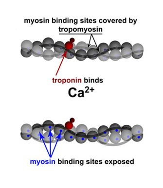
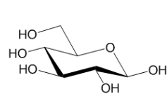
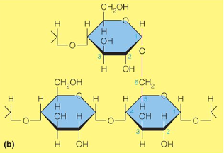
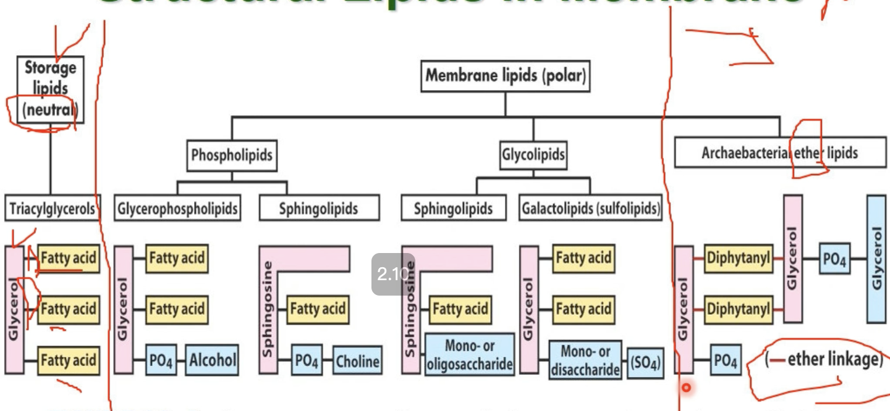
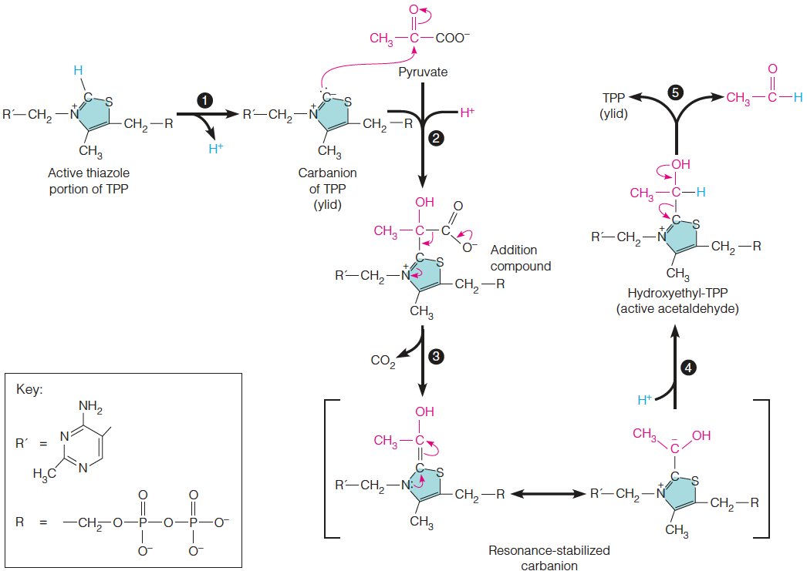
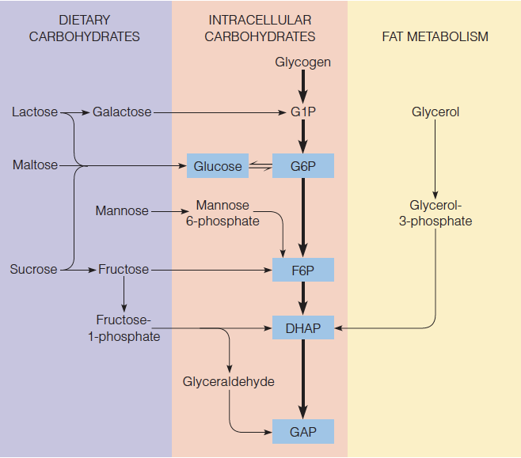

Nucleic Acids
- 最大吸收光為260nm (蛋白質280nm)
- Nucleic Acids

- Nucleosides
- 五碳＋含氮鹼基
- Hairpin structure
- 單股折疊配對
- Hypochromicity(減色效應)
- 雙股DNA對波長260nm的光吸收量小於變性的DNA，可
以用來檢測DNA是否變性 - telomeres
- 端粒
- ddNTPs
- C2,C3去氧，聚合中止於此
tautomerize
聚合

A, B form
- DNA-DNA: B form
- 窄長
- 都是 anti form
- Other: A form
- 寬胖
- 都是 anti form


-
Z form
- 左旋
- 出現在C-G對多的地方
- 在基因調控上扮演重要角色
- C、T 是anti form，A、G是syn form
-
H form
- 三股螺旋
- 其中一股含豐富的嘌呤及二股含豐富的嘧啶。
- A與兩個T配對，G與兩個C配對，每個鹼基都是從側邊配對。
- 有 Watson-Crick base pairing 和 Hoogsteen－type base pairing
結構們
G-quadruplex
富含鳥嘌呤的核酸序列所構成的四股型態，常見於telomeres
胺基酸


影片小知識
Gly, Glu 是神經傳遞物質
名詞們
- Peptide bond
- 肽鍵
- pI
- 等電點 中性氨基酸pKa平均
酸性胺基酸
 - 可以變-2
- pH7 負電
- 可以變-2
- pH7 負電
阿斯巴甜

味精

鹼性
- 可變+2 - pH7 正電，除了Histidine 中性環境下未完全解離，可做為生理緩衝溶液芳香
 - $\pi$電子吸280nm，特別是Try
- $\pi$電子吸280nm，特別是Try

不代電極性

不代電非極性

Protein
- 序列 N to C
- preproprotein
- 去內質網

- proprotein
- zymogen
- 藍色要剪才有活性

分子量
名詞們
- conjugated protein
- 不只是氨基酸
- prosthetic group
- 輔基，不是氨基酸部分
- Denaturation
- 變性，不涉及蛋白質一級結構的變化，次級鍵被嚴重破壞。
- molecular chaperone
- 伴護蛋白，幫助功能蛋白折疊
內切酶
| 內切酶 | 位置 |
|---|---|
| Trypsin | Lys, Arg |
| Chymotrypsin | Phe, Try, Tr |
| CNBr | Met |

結構
- Assembled subunits 的每個polypeptide chain 之間非共價鍵。
- Corey-Pauling rules: 肽鍵不能轉
- 兩邊能旋轉，的 同號


- Chaperones
- 加速一級結構摺疊
α-Helix
- 3.6胺基酸一圈，長度 胺基酸數
- 沒有 Pro
-sheet
Circular dichroism
旋光看
X-ray diffraction crystallography
決定三級結構
一些蛋白質

holoprotein vs apoprotein

Keratin
- Cys 雙硫
- 都是
- coiled coil
- 絞在一起
Collagen
- Lys, Pro 接 OH再接 Gal, Glc
- Cross link 發生在 Lys 的 N
- 脊椎動物獨有
- 非α-Helix
- Tropocollagen
Hemoglobin
Hemoglobin 是 Allosteric Protein(結合後會催化其他結合)

2,3-BPG
擠回T-form，降低O_2_結合力

胎兒

抗體
Tip
Fc增加穩定
Actin/ Myosin


Ca2+ and Tropomyosin
flagella and cilia
flagella
- ATP 驅動
- 擺動
cilia
- H+ 驅動(pmf 分子馬達)
- 轉動

Prion
PrPc: 正常，α-helix
PrPsc: 致病，β-sheet
練習題
>產生雙硫鍵→氧化醣
- L-form C5的OH在左邊，D-form C5的OH在右邊
- 成環D在下

名詞們
- Glycoside
- 醣基 C1
- anomeric pair
- C1的OH在下面為α
- mutarotation
- anomeric pair 互變
- Aldonic acid
- C1氧化，醣酸
- glucitol
- 山梨醇，葡萄糖還原成醇
- furanoses
- 五環
- pyranoses
- 六環
- oligosaccharides
- 寡醣 3-10
- Uronic acids (Glucuronic acid)
- C6氧化，解毒用
- Alditols
- C1還原
- amylose and amylopectin
- 無/有分支多醣
- Sorbitol
- 堆積造成糖尿病白內障
- Lectins
- 為蛋白或醣蛋白，可辨認糖基，與之結合
雙糖
| 醣 | |
|---|---|
| Sucrose | α1→β2 |
| Maltose | α(1→4) |
| lactose | β1→β4 |
- 糖胺
- pyranose
- 
多醣們
肝醣與澱粉 glycogen and starch
8-12個α(1 → 4)出一個α(1 → 6)

纖維素 cellulose
β(1 → 4)
幾丁質 chitin
β(1 → 4)

黏多醣 mucopolysaccharides
- Glycosaminoglycans
- 酸性多醣

蛋白聚糖 Proteoglycans
黏多醣+蛋白質

- Heparin
- 阻止血栓

肽聚糖 Peptidoglycan
- β (1 → 4)
- N-Acetyglucosamine (NAG), N-Acetylmuramic (NAM) 交錯形成鏈
- 鏈之間氨基酸連接
- Lysozyme 切斷醣鏈
Gram-positive/ negative/
- 陰性只有一層多糖


heparin
- 高度硫化的糖胺聚糖抗凝血劑
- The α(1 → 4) and β(1 → 4)bonds alternate
hyaluronic acid
- β(1→4)
蛋白質醣基化(Glycosylation)
N-linked glycosylation
C1 接 Asn 的 NR
O-linked glycosylation：
C1 接 Ser 的 O
練習題
B 成環多α, β
這種東西
Enzymes
- Kinase
- 激酶，磷酸化
- Phosphatase
- 磷酸酶，去磷酸化
模型
- key and lock model
- induced-fit model
- conformation selection model

酵素動力學 (Michaelis-Menten kinetics)
使用 Pre-steady state (還沒飽和)
kcat
一個酵素分子在一定時間內可將受質轉變為產物的受質數量 即 k3
Km
酵素與受質間親和力的指標，Km越大親和力越小
Plot

評估催化能力
反比雙倒數圖的斜率
抑制劑
### 競爭 {#競爭 }
非競爭


編號
EC ?.?.?.?
- Oxidoreductases
- 催化氧還
- Transferases
- 移動官能基
- Hydrolases
- 水解
- Lyases
- catalyze removal of a group from or addition of a group to a double bond, or other cleavages involving electron rearrangement.
- Isomerases
- 異構
- Ligases
- 連接
Lipid
- R1,R2 儲存能量
俗名
種類
Glycerophospholipid
修飾
Serine 多了甲基

Sphingolipid
- 2接醯氨

Cholesterol
- 27 C
- 只有 OH親水
不對稱
細胞膜
Caveolins
- shaft 蛋白質特徵
- 大分子運輸
內外運輸
糖解
Glucose → 2 Pyruvate
NADH進入粒線體
反應
耗能部分
- Hexokinase 磷酸化 Glucose C6 接變G6P
- I,II,II型酵素KM 極小
- G6P Isomerases 催化 G6P 變五環 F6P
- Ser 帶 pi

- Phosphofructokinase 磷酸化 F6P 變FBP
-
切兩塊
-
變 2 GAP
產能部分
- 磷酸脫氫
- NAD+氧化aldehyde產生酸，酸＋ Pi 磷酸化
- 吸熱
G3P + Pi + NAD+→ BPG + NAD+ + H+
-
BPG + ADP → 3FP + ATP
- 大放熱，回不去
-
Pi換位置
- 3PG → 2PG
- His在2接上Pi ，再拿3的pi
- Enolase 脫水
加磷酸難回頭
Mg+能接兩個電子，用以穩定結構
Pyruvate Kinase
- L,R 受到ATP抑制
- M1 持續活化
無氧，NAD+再生
Pasteur effect
酵母菌暴露空氣，無氧呼吸轉為有氧，Glucose, G6P, F6P 用量大減、NADH 累積
酒精
其他路徑
Leloir pathway
Galactose → G6P
- UDP-Glc→UDP-Gal 負責把4號OH翻過來
- Epimers 再把 UDP-Gal 轉回來
Glycerol 甘油
- 磷酸化(glycerol kinase)
- 氧化(dehydrogenase)
酵素們
糖質新生
肝、腎
反應
丙酮酸羧化
- pyruvate carboxylase
- 產生 Oxaloacetate
- 需要ATP, biotin
- 在 粒線體 進行，mitochondrial malate dehydrogenase(mitochondrial MDH)還原成用 Malate 穿膜
Oxaloacetate 磷酸化成 PEP
- 細胞質、粒線體都有 Kinase
- PEP/ Malata 穿粒線體膜
拔Pi
- bisphoshaatase
- glucose-6-phosphatase
cori cycle
骨骼肌產乳糖，到肝臟再生成葡萄糖
Propionyl-CoA
脂肪酸代謝，丙烯輔酶A 轉乘 Oxaloacetate
Glycogen/ Starch
拆解
- 用 phosphorylase 拆(Pi在C4，再轉成G6P)
酵素們
- phosphorylase: 切長鏈(剩下4個)
- amylopectin: 搬運短鏈
- α(1→6)-glucosidase: 切α(1→6)
調控
算了吧。。。
- Phosphoylase
- T 非活化
- R 活化
- 拆下來的是 G1P，進入糖解產生3ATP
合成
glycogen synthase
直鏈
transglycosylase
支鏈
調控
Ribsome
Transketolase
- 拔酮，接到醛上面
- 需要TPP穩定
其他路徑
電子傳遞
NADH 進入粒線體
Malate/aspartate shuttle
- 2.5mole ATP
dihydroxyacetone phosphate/glycerol-3-phosphate shuttle
- 1.5 ATP
Electron-carrying molecules
NAD+
-
70% 在粒線體
-
質子接受者（N+對面那個C)

FAD
- Flavoprotein
ubiquinone
- 輔酶Q
iron-sulfur proteins
- Cys 抓鐵
Cytochromes
- 大多在蛋白質裡面
- 血基質（heme）
Electron Transport
NADH dehydrogenase
- NADH FMN Fe-S CoQ
Succinate dehydrogenase
- Succinate FADH2 Fe-S CoQ
- 有 HemeB 做保險

Cytochromes c Oxidoreductases
- CoQH2 Cyt b Fe2-S2 Cyt c1 2Cyt c
Q cycle
QH2一次傳一顆電子給 Cyt C
Cytochrome c oxidase
- 2Cyt c CuA heme a heme a3-CuB O2
- CN- 、 CO H2S抑制
Complex V
P/O ratio
- 一對電子產成ATP數量
- 人類10個 H+ 轉一圈（c subunit），產三個ATP
- 磷酸根進入粒線體需要同向運輸H+
Uncoupling agent
- 搶H+
Thermogenin (UCP1)
調控
低氧
- HIF
- PDH kinase
- COX4 失去功能
- ATP 回細胞
- 產生乳酸
Mitochondria
- Oxidase
- 產物無氧化劑
- Oxygenases
- 產物有氧化劑
Cytochrome P450
- ER, Mitochondria, 細胞膜
- 氧化酶，氧化類固醇、脂肪酸
- 附加 OH-
Cytochrome c
- 啟動細胞凋亡 Intrinsic Apoptosis
自由基 （Reactive Oxygen Species）
- Peroxynitrite 會過破壞細胞膜
抗氧化
- Glutathione
- Vitamins C and A
- Vitamins E (alpha tocopherol)
- Uric acid
Pyruvate Oxidation
- 氧化脫酸，Pyruvate → Acetyl-CoA
- 產生 1NADH
- 不可逆
- 催化劑：pyruvate dehydrogenase complex (PDC/ PDH)
- Cofactor 在 VitB裡面
步驟
pyruvate dehydrogenase
- pyruvate跟TPP(Thiamine Pyrophosphate)結合
- N,S讓 C容易形成 C-，攻擊 pyruvate
dihydrolipoyl transacetylase
- Lipoamide(Lipoyl-E2)從 HETTP 拿走 acetyl group
- 和CoA結合。
- 產生 Acetyl-CoA
- 怕砷
dihydrolipoyl dehydrogenase
- riboflavin → FADH2 → NADH 形成
- VitB2
CoA
- Pantothenic acid(Vit B5) + ADP
Citric Acid Cycle
- 產生 CO2 、 electron carrier
- CO2來自 Oxaloacetate
Mitochondria
- 外膜有許多由孔蛋白(Porin)，讓分子量小於5000及離子可以自由穿過
- 內膜篩選
步驟
形成citrate
- Acetyl-CoA和oxaloacetate(OAA)結合形成 citrate （檸檬酸）
- 不可逆
- Citrate synthase 會被NADH、ATP和succinyl-CoA所抑制
Isomerization of Citrate
- 3°醇變 2°醇
- aconitase
Generation of CO2
- 2°醇氧化成酮 （oxalosuccinate）
- 形成 NADH
- 脫去 CO2，形成α-Ketoglutarate
- isocitrate dehydrogenase被ATP和NADH所抑制；被ADP和NAD+所活化
脫掉第二個碳(CO2)
- 僅留下 Acetyl-CoA的酸
- 形成 NADH
- 接上 CoA，形成 Succinyl-CoA
- α-Ketoglutarate dehydrogenase 被ATP、NADH和succinyl-CoA抑制，並會被ADP及NAD+促進
A Substrate-Level Phosphorylation
- succinyl-CoA synthetase
- His 參與
- 產能
A Flavin-Dependent Dehydrogenation
- succinate dehydrogenase會出現在粒線體
的內膜上 (Cox II) - C2氧化形成烯 (trans)
- 產生 FADH2
Hydration
- fumarate hydratase 有 trans 專一性
A Dehydrogenation that Regenerates Oxaloacetate
- 2°醇氧化，形成 Oxaloacetate
- 形成 NADH
- 吸熱
大風吹
- 路徑一：Pyruvate變成OAA
- 要用掉ATP
- 酵素是Pyruvate carboxylase
- 在肝、腎細胞旺盛
- 和 PDH路徑拮抗，Acety-CoA 太多 Pyruvate 就會改走這裡
- Biotin (VitB7)參與
- 路徑二：PEP變成OAA
- 酵素是PEP carboxykinase
- 在動物的心、肌肉細胞
- 路徑三：PEP變成OAA
- 酵素是PEP carboxylase(要和前一個酵素區分清楚)
- 在植物、微生物細胞
- 路徑四：Pyruvate變成Malate(再變成OAA)
- 酵素是malic enzyme
- 在所有真核細胞和細菌
- 在脂肪酸合成的過程中，這個反應也可以走反方向，也就是Malate回到 Pyruvate，產生大量NADPH。
補充：很多合成反應要用到NADPH作為能量來源，在分解作用則是用到NADH作為能量來源。
VitB 們
B1 (Thiamine)
- 做 TPP，脱CO2用
B2 (riboflavin)
VitB5 (Pantothenic acid)
- 做 CoA
VitB7 (Biotin)
調控
糖解、糖升
F2,6P調控
- FBP Pi接在1,6、F2,6BP在 2,6
PFK-2/FBPase-2
- Bifunctional 酵素，
- 磷酸化則偏向FBPase-2 ，拆 F2,6BP (升糖素促進)
- 去磷酸化則偏向PFK-2，做F2,6BP (胰島素促進)
glucokinase regulatory protein (GKRP)
肝臟內運行
- Glucose促進 GKRP釋放 hexokinase isozyme IV (HKIV)
- insulin 促進 PFK-2/FBPase-2 去磷酸化
- 去磷酸化 PFK-2/FBPase-2與 HKIV 結合，催化 F6P→F2,6P
- F2,6BP促進F6P→FBP
- 肝細胞糖解
Pyruvate kinase
- ATP 抑制 ，磷酸化失去活性
PDH
- PDH E1 磷酸化無活性
- PDH E2, E3產物抑制自己
Citrate circle
- NADH ⇥ ALL
- ADP/ATP, Ca2+ → PDH, isocitrate dehydrogenase
- Succinyl-CoA ⇥ α-Ketoglutarate dehydrogenase